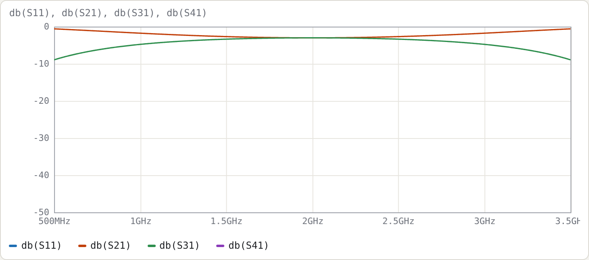
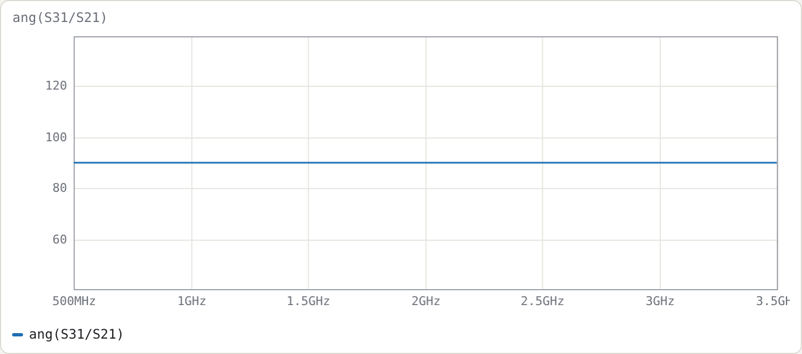
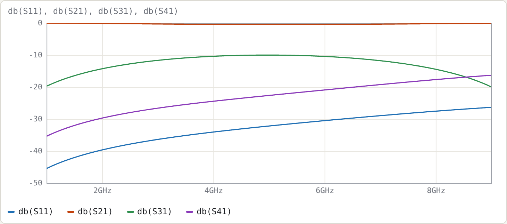
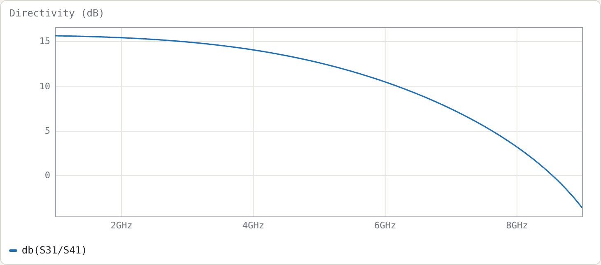

Example 2: Coupled-line couplers
Netlists:
Goal: design a quarter-wave backward-wave coupler from its even/odd impedances. Then see what an inhomogeneous medium (microstrip) does to directivity, and fix it with lumped capacitors and the optimiser.
Design equations
For a symmetric pair with voltage coupling factor k and system impedance Z0:
Z0e = Z0 √((1+k)/(1−k)) Z0o = Z0 √((1−k)/(1+k)) Z0e·Z0o = Z0²
For 3 dB, k = 1/√2, which gives Z0e = 120.71 Ω and Z0o = 20.71 Ω. That is far tighter than edge-coupled lines can practically reach, which is why Lange (interdigitated) couplers exist. The netlist computes them from k itself:
.param k = 1/sqrt(2)
.param Z0 = 50
port in Z0 # 1
port thru Z0 # 2
port cpl Z0 # 3
port iso Z0 # 4
cline K
Zeo Z0*sqrt((1+k)/(1-k)) Z0*sqrt((1-k)/(1+k))
er 2.2
len 90deg
A in cpl
B thru iso
end
Terminal layout. Line 1 runs from in (end A) to thru (end B). Line 2 runs from cpl (end A) to iso (end B). The coupled port is at the same end as the input: TEM coupled-line couplers are backward-wave devices.
Homogeneous result (stripline, εr = 2.2)


Measured on a 12 001-point sweep:
| quantity | result |
|---|---|
| line length | 25.27 mm (λ/4 at 2 GHz in εr = 2.2) |
| |S31| within 0.5 dB of 3 dB | 1.416–2.584 GHz (58 %) |
| match S11, isolation S41 | below −250 dB at every point (numerically zero) |
| ang(S31/S21) | 90° at every frequency |
Why S11 and S41 are zero everywhere, not just at f0. In a homogeneous medium the even and odd modes travel at the same speed. Because Z0e·Z0o = Z0², an ideal TEM coupler is perfectly matched and isolated at all frequencies. Only the coupling magnitude varies:
|S31|² = k² sin²θ / (1 − k² cos²θ)
Setting |S31|² = ½·10−0.05 gives θ = 63.7°, i.e. f = 0.708·f0 = 1.416 GHz, which matches the measured band edge.
Inhomogeneous result (microstrip)
The second netlist gives each mode its own effective permittivity:
Zeo 69.4 36.0 6.9 5.6 # Z0e Z0o eps_eff_e eps_eff_o (10 dB, alumina-like; illustrative)
The Line sections panel confirms two modes: εeff 6.9 (even, vector [0.707 0.707], Z = 69.4 Ω) and εeff 5.6 (odd, [0.707 −0.707], Z = 36.0 Ω). With len 90deg, the length is set by the mean √εeff, giving 6.00 mm at 5 GHz.


| f (GHz) | S31 (dB) | S41 (dB) | directivity db(S31/S41) |
S11 (dB) |
|---|---|---|---|---|
| 2 | −14.31 | −29.73 | 15.4 | −39.7 |
| 5 | −10.03 | −22.66 | 12.6 | −32.2 |
| 8 | −14.46 | −17.70 | 3.2 | −27.6 |
The coupling is right (−10.0 dB at f0), but directivity is only 12.6 dB. The even and odd modes reach the far end with different electrical lengths, so their contributions at the isolated port no longer cancel. This is the classic microstrip coupler problem.
Fixing it: end compensation capacitors
A common fix is a small capacitor across the gap at each end, which slows the odd mode. Add to the microstrip netlist:
.param cc = 0.05p tune 0.001p 1p
Cc1 in cpl cc
Cc2 thru iso cc
.goal db(S31/S41) > 40 4.5G 5.5G
and press Optimise. It converges to cc ≈ 70.8 fF, with these results:
| f (GHz) | S31 (dB) | S41 (dB) | directivity | S11 (dB) |
|---|---|---|---|---|
| 2 | −12.92 | −42.14 | 29.2 | −31.9 |
| 5 | −10.00 | −54.69 | 44.7 | −62.2 |
| 8 | −26.16 | −29.22 | 3.1 | −19.3 |
Directivity now exceeds 20 dB from 1.0 to 6.86 GHz. This illustrates the general pattern for using the tool: lines from the field solution, lumped elements for discontinuities and fixes, and the optimiser to size them.
Try
- Set the even/odd εeff equal in the microstrip file. The directivity becomes infinite, as in the stripline case.
- Change
kin the stripline file to 0.316 (10 dB) and compare the flatness of the coupling with the 3 dB case. - Load Lange coupler, 4 fingers from the Examples menu. Four interdigitated fingers, with alternate fingers joined by
wire, reach the 3 dB coupling a single pair can't.